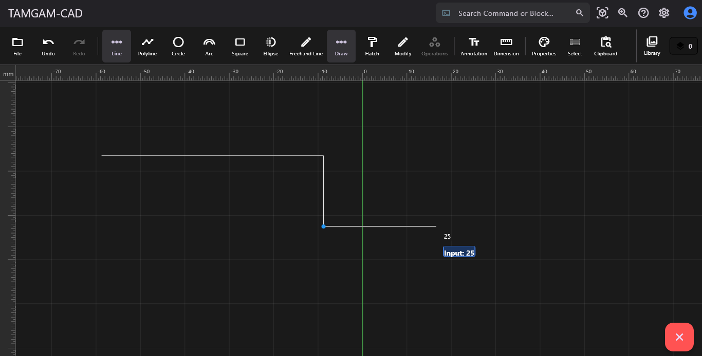

Başlangıç ve Arayüz
TamgamCAD'in modern ve kullanıcı dostu arayüzüne hoş geldiniz. Uygulama, çizim alanını (Canvas) maksimum verimle kullanmanızı sağlar.

- Tema (Theme): Göz yorgunluğunu azaltmak veya kişisel tercihinize göre üst menüden Koyu (Dark) ve Açık (Light) arayüz temaları arasında geçiş yapabilirsiniz.
- Izgara (Grid): Çalışma alanında (Canvas) görsel bir referans oluşturmak veya hizalama yapmak için üst menüden ızgara görünümünü açıp kapatabilirsiniz.
- Kenetleme (Snap): Çizim esnasında nesnelerin Uç Nokta (Endpoint), Orta Nokta (Midpoint), Kesişim (Intersection) ve Merkez koordinatlarına hassas bir şekilde hizalanmak için, üst menüde yer alan 'Ayarlar' sekmesinden "Kenetleme" ayarlarını kullanın.
- Ölçek (Scale): Çiziminizin gerçek dünyadaki boyut karşılığını (mm, cm, m vb.) belirlemek için üst menüdeki ölçek ayarlarını kullanın.
- Ölçü Girişi (Dimension Input): Çizim esnasında uzunluk değerlerini klavyenizden girebileceğiniz gibi; özellikle dokunmatik ekranlar ve tabletler için tasarlanmış üst menüdeki özel ölçü giriş panelini de kullanabilirsiniz.
- Dil Seçeneği (Language): Çalışma ortamınızı kişiselleştirmek için üst menüden arayüz dilini Türkçe (TR) veya İngilizce (EN) olarak değiştirebilirsiniz.
- Gezinme (Pan & Zoom): Fare tekerleğini kaydırarak yakınlaşıp uzaklaşabilir (Zoom), tekerleğe basılı tutarak veya dokunmatik ekranda iki parmağınızla ekranı kaydırabilirsiniz (Pan).
- Dik Mod (Orto): Çizgilerinizi yalnızca yatay (0°, 180°) ve dikey (90°, 270°) eksenlerde çizmeye zorlamak için klavyenizden F8 tuşunu kullanın.
Dosya İşlemleri ve Dışa Aktarım
Projelerinizi güvenle saklayın ve endüstri standardı formatlarda diğer yazılımlarla paylaşın.
- Dosya Aç (Open): Yarım kalan projelerinize devam etmek için daha önceden kaydettiğiniz
.json uzantılı TamgamCAD proje dosyalarınızı çalışma alanına aktarabilirsiniz.
- Kaydet / Farklı Kaydet (Save): Çizimlerinizi daha sonra tüm katmanları, blokları ve özellikleriyle yeniden düzenleyebilmek için bilgisayarınıza yerel olarak
.json formatında kaydedin.
- Çıktı Alma (Export): Çizimlerinizi vektörel sunumlar ve yüksek çözünürlüklü baskılar için
.SVG ve .PDF, hızlı paylaşımlar için ise .PNG formatında dışa aktarabilirsiniz.
- Resim Ekleme (Insert Image): Çalışma alanınıza referans görseller (JPG, PNG) ekleyerek üzerinden çizim (tracing) yapabilirsiniz.
Temel ve Gelişmiş Çizim Araçları
İster düz hatlar, ister organik eğriler çizin. Üst menüdeki araç kutusundan dilediğiniz aracı seçerek projenize başlayabilirsiniz:

- Düz Çizgi (Line) ve Çoklu Çizgi (Polyline): Başlangıç ve bitiş noktasıyla bağımsız çizgiler oluşturabilir veya uç uca eklenen kesintisiz çoklu çizgiler çizebilirsiniz.
- Daire (Circle): Önce merkez noktasını belirleyin, ardından yarıçap değerini girerek (veya fareyle sürükleyerek) dairenizi oluşturun.
- Yay (Arc): Önce yayın kiriş uzunluğunu (başlangıç ve bitiş noktalarını) belirleyin, ardından bombe (kavis) yüksekliğini ayarlayarak yay çizimini tamamlayın.
- Kare / Dikdörtgen (Rectangle): Fare ile sürükle-bırak yaparak veya klavyeden doğrudan
Genişlik X Yükseklik (veya Genişlik * Yükseklik) formatında net ölçü girerek çizebilirsiniz.
- Elips (Ellipse): Fare ile sürükle-bırak yöntemiyle eksen genişliklerini belirleyerek serbest elipsler oluşturun.
- Çokgen (Polygon): İhtiyacınız olan kenar sayısını klavyeden girerek düzgün çokgenler çizebilirsiniz.
- Halka (Donut): Önce merkez noktasını belirleyin, ardından sırasıyla iç çemberin ve dış çemberin yarıçaplarını girerek kalın cidarlı bir halka oluşturun.
- Tan-Tan-Radius (TTR): İki farklı nesneye teğet olan ve belirlediğiniz yarıçap değerine sahip bir çember çizmek için kullanın. (Not: Girdiğiniz yarıçap değeri, iki nesne arasındaki mesafeye geometrik olarak uygun olmalıdır. TTR ile oluşan çemberleri sonradan Trim komutuyla budayarak yumuşak köşe dönüşleri elde edebilirsiniz.)
- Teğet Çizgi (Tangent Line): İki farklı çemberin dış yüzeylerine kusursuz bir şekilde teğet geçen doğrusal çizgiler çizmek için kullanın.
- Serbest Çizim (Freehand): Fare veya stylus kaleminizle el çizimi hissi veren, arka planda otomatik olarak matematiksel eğrilere dönüşen organik formlar oluşturun.
İpucu: Tüm seçim işlemlerinde "Filtreleme" özelliğini kullanarak (Sadece Metinleri Seç, Sadece Daireleri Seç vb.) karmaşık projelerde hız kazanabilirsiniz.
Düzenleme (Modifikasyon)
Çizdiğiniz geometrileri hassas bir şekilde manipüle edin.
Gruplama, Parçalama ve Boolean İşlemleri
TamgamCAD'in en güçlü özelliklerinden biri, nesneleri anlık olarak gruplayabilmesi ve üst üste binen kapalı şekilleri matematiksel olarak işleyebilmesidir.

- Grupla (Group) & Grubu Çöz (Ungroup): Birden fazla nesneyi seçip anlık olarak tek bir nesne gibi hareket ettirmek için gruplayabilir veya mevcut bir grubun bileşenlerini tekrar bağımsız hale getirmek için grubu çözebilirsiniz.
- Parçala (Explode) & Uç Uca Ekle (Join): Bütünleşik bir çoklu çizgiyi (Polyline) veya çokgeni bağımsız alt çizgilere ayırmak için parçalayabilir; veya ucu açık, birbirine değen bağımsız çizgileri tek bir sürekli objede birleştirebilirsiniz.
- Dış Zarf Birleştir (Wrap / Boundary): Üst üste binen karmaşık nesnelerin iç detaylarını silip sadece en dış sınırlarını (konturlarını) baz alarak yeni, tek parça ve kapalı bir çevre geometrisi oluşturur.
- Boolean İşlemleri: Kapalı şekiller arasındaki matematiksel katı modelleme işlemleridir:
- Birleştir (Union): Üst üste binen şekilleri eriterek tek bir bütün haline getirir.
- Çıkar (Difference): Ana şeklin içinden, ikinci şeklin değdiği veya kesiştiği alanları kesip atar.
- Kesişim (Intersection): Sadece şekillerin üst üste bindiği ortak (kesişen) alanı bırakır, gerisini siler.
- Sadece Farklar (Exclusion / XOR): Kesişim işleminin tam tersidir; yalnızca şekillerin birbirine değmeyen farklı kısımlarını bırakıp ortak alanı siler.
Ölçülendirme, Tarama ve Notlandırma
Teknik resim kurallarına uygun detaylandırma yapın.
- Ölçülendirme (Dimension): Doğrusal, Açısal, Çap, Yarıçap ve otomatik Alan Hesabı araçlarıyla projenizi teknik olarak isimlendirin.
- Tarama (Hatch): Kapalı geometrik alanların içini, projenizin teknik gereksinimlerine uygun farklı materyal desenleriyle doldurun. Desteklenen desenler: Düz Dolgu (Solid Boyama), Dikey Çizgili, Diyagonal, Çapraz, Noktalı, Tuğla, Dama, Petek ve Beton.
- Metin ve Kılavuz (Leader): Projenize açıklayıcı düz metinler veya spesifik detayları işaret etmek için oklu metinler (kılavuz çizgileri) ekleyin.
- Tablo ve Ayarları: Çalışma alanına detay ve özellik tabloları ekleyin. Tablo ayarlarını kullanarak satır/sütun sayılarını, boyutları ve hücre içeriklerini projenize göre özelleştirin.
Katmanlar, Kütüphane ve Nesne Özellikleri
Büyük projelerde karmaşayı önleyin ve nesnelerinizin görsel niteliklerini profesyonelce yönetin.
- Katman Paneli (Layers): Katmanları isimlendirin ve her birine özel renk atayın. Çalışma esnasında katman görünürlüğünü açıp kapatabilir veya üzerinde işlem yapılmasını engellemek için kilitleyebilirsiniz (Lock/Freeze).
- Nesne Özellikleri (Properties): Çalışma alanındaki seçili nesnelerin rengini, çizgi tipini (sürekli, kesik, noktalı vb.) ve çizgi kalınlığını üst menüdeki özellikler panelinden kolayca değiştirebilirsiniz.
- Özellik Eşleştir (Match Properties): Bir nesnenin rengini, çizgi tipini ve kalınlığını kopyalayarak tek tıkla diğer nesnelere kusursuz bir şekilde aktarın.
- Blok Oluşturma: Sık kullandığınız objeleri (örneğin standart bir pencere çizimi) Blok haline getirerek tek bir nesne gibi davranmasını sağlayın.
- Proje ve Global Kütüphane: Bloklarınızı kütüphaneye kaydederek hem üzerinde çalıştığınız mevcut projede hem de gelecekteki diğer projelerinizde (Global Kütüphane) tek tıkla yeniden kullanın.
İzometrik Görünüm (Isometric)
2 Boyutlu uzayda, 3 Boyutlu hissi veren teknik çizimler oluşturmak için özel araçlar.

- İzometrik Izgara (Isometric Grid): Üst menüden aktif edildiğinde, çalışma alanındaki ızgara yapınız, imleciniz ve çizgileriniz otomatik olarak 30° ve 150°'lik izometrik eksenlere kenetlenir. Bu sayede karmaşık izometrik perspektifleri kolayca çizebilirsiniz.